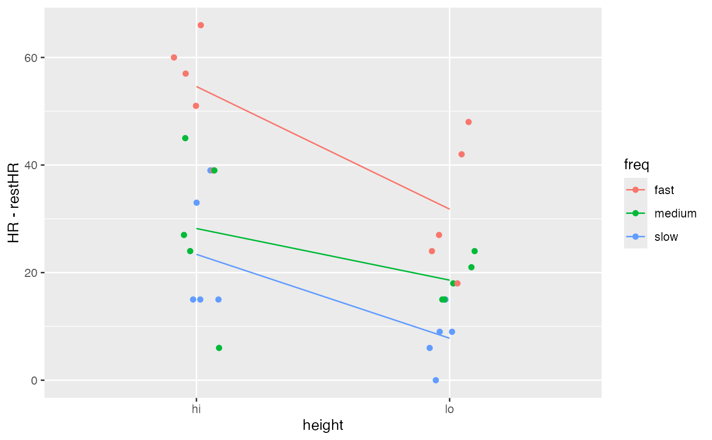

An experiment was conducted by students at The Ohio State University in the fall of 1993 to explore the nature of the relationship between a person's heart rate and the frequency at which that person stepped up and down on steps of various heights.
Format
A data frame with 30 observations on the following 7 variables.
- order
performance order
- block
number of experimenter block
- restHR
resting heart rate (beats per minute)
- HR
final heart rate
- height
height of step (
hiorlo)- freq
whether subject stepped
fast,medium, orslow
Source
These data are available at DASL, the data and story library (https://dasl.datadescription.com/).
Details
An experiment was conducted by students at The Ohio State University in the
fall of 1993 to explore the nature of the relationship between a person's
heart rate and the frequency at which that person stepped up and down on
steps of various heights. The response variable, heart rate, was measured in
beats per minute. There were two different step heights: 5.75 inches (coded
as lo), and 11.5 inches (coded as hi). There were three rates
of stepping: 14 steps/min. (coded as slow), 21 steps/min. (coded as
medium), and 28 steps/min. (coded as fast). This resulted in
six possible height/frequency combinations. Each subject performed the
activity for three minutes. Subjects were kept on pace by the beat of an
electric metronome. One experimenter counted the subject's pulse for 20
seconds before and after each trial. The subject always rested between
trials until her or his heart rate returned to close to the beginning rate.
Another experimenter kept track of the time spent stepping. Each subject was
always measured and timed by the same pair of experimenters to reduce
variability in the experiment. Each pair of experimenters was treated as a
block.
Examples
data(Step)
#> Warning: data set ‘Step’ not found
gf_jitter(HR-restHR ~ freq, color = ~height, data = Step, group = ~height,
height = 0, width = 0.1) %>%
gf_line(stat = "summary", group = ~height)
#> No summary function supplied, defaulting to `mean_se()`
gf_jitter(HR-restHR ~ height, color = ~freq, data = Step, group = ~freq,
height = 0, width = 0.1) %>%
gf_line(stat = "summary", group = ~freq)
#> No summary function supplied, defaulting to `mean_se()`
